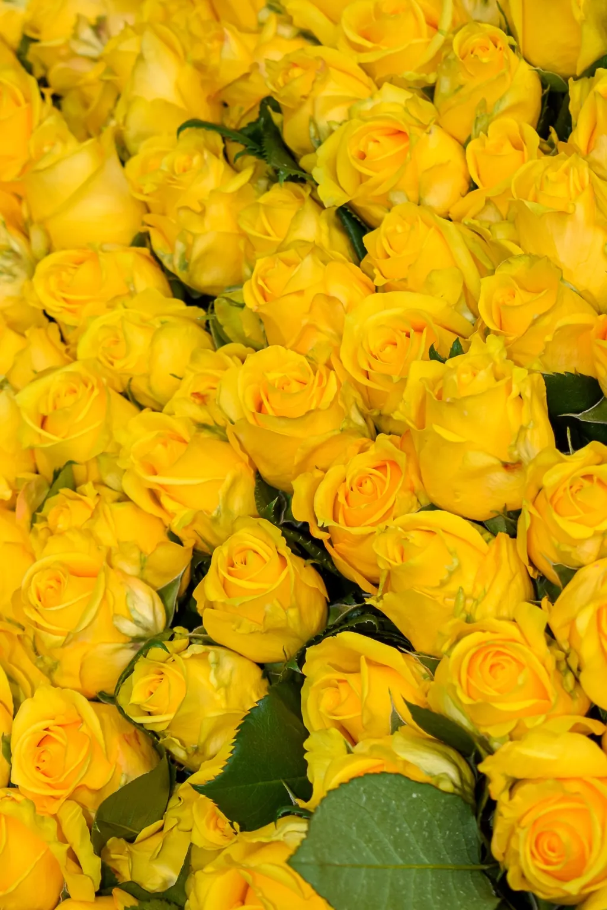

El amarillo en un ramo
Una forma sencilla de escoger flores pensando en la persona y en el lugar que van a ocupar.

Un ramo amarillo cambia mucho según dónde lo pongas. Sobre una mesa de madera oscura hace resaltar los tonos dorados de los pétalos. Junto a una pared blanca, lo primero que ves es el contraste con las hojas. Cerca de una ventana, un pétalo que parecía de un solo color deja ver tonos más claros en los bordes.
Si estás eligiendo flores para alguien, piensa en una escena que conozcas. Tal vez tiene una mesa pequeña donde toma café por las mañanas. Tres tallos en un frasco pueden quedar mejor allí que un ramo ancho. Si suele reunir a sus amigos a comer, un arreglo bajo en el centro deja espacio para pasar los platos y conversar de un lado al otro.
El color también puede venir de un recuerdo compartido: la taza que siempre usa, una foto de vacaciones o el color que elige cada vez que compra algo para su casa. Una nota breve que cuente ese recuerdo vuelve el regalo personal. Puedes escribir simplemente «para tu mesa de los domingos» y dejar que la persona entienda el resto.
En un paseo entre rosas, intenta mirar por un momento las hojas y no el botón. El amarillo parece más cálido junto a unas hojas oscuras y más suave entre verdes claros. Ese detalle puede ayudarte a elegir el siguiente ramo.